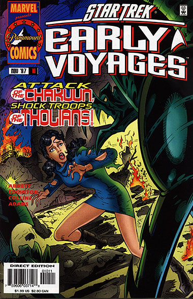
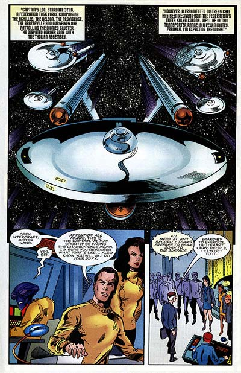

|


|

|
Gênese
| Episódios I Reflexões
| Palavras do autor | Palavras
do artista Star Trek
Early Voyages, nº 10 – novembro de 1997  História: Dan Abnett e Ian Edginton Material produzido por Salvador Nogueira para o Trek Brasilis
Data Estelar: 371.2 Sinopse: A Enterprise é enviada até a colônia da Federação Jubal, que foi atacada e totalmente dizimada pelos Chakuuns, a tropa de guerreiros de elite da Assembléia Tholiana --uma raça violenta anexada séculos atrás. Aparentemente os Tholianos estão empreendendo uma nova investida expansionista, por razões desconhecidas. Aproximando-se do sistema Jubal, a Enterprise detecta o traço de dobra das naves Chakuun e marca um curso de interceptação. Uma das famosas naves-fantasma dos Chakuuns se volta para enfrentar a nave da Federação. A Enterprise sofre extensos danos, mas consegue destruir a nave atacante. Como resultado, a nave volta à Terra para reparos. Enquanto Pike e a Número Um partem para Mojave, onde o capitão vai visitar seu pai, um almirante reformado da Frota Estelar, a ordenança Colt leva Mohindas, Tyler e Spock para Nova York, sua cidade natal. A enfermeira Carlotti, ainda impactada por reencontrar os Chakkuns, responsáveis pela morte de seus pais na colônia New Milan, visita seus irmãos mais novos e sua tia Olivia, em Florença. Em Nova York, Mohindas resolve dar uma ajuda a Tyler, que está apaixonado por Colt. Ela arma com ele um modo de deixar os dois a sós, e o navegador finalmente propõe à ordenança um encontro. Ela hesita, mas diz que vai pensar a respeito. Enquanto isso, Pike está de volta à ativa, depois da frustrante visita a seu pai, que foi bastante frio com ele. O capitão também não consegue admitir que estava sentindo falta do pai, chegando até a ter uma discussão com a Número Um por causa disso. A Enterprise é então destacada para comandar uma frota com outras quatro naves (a Achilles, a Nelson, a Providence e a Brazzaville) até o Aglomerado Diomed, onde as forças Tholianas estão avançando contra a Federação. A caminho de lá, eles recebem um pedido de socorro da colônia da Federação em Theta Kalyb. Chegando ao planeta, um grupo de assistência médica é transportado para a superfície, para descobrir que as instalações foram devastadas. "É New Milan tudo de novo", exclama a enfermeira Carlotti. Em órbita, a Enterprise e as outras naves da Frota Estelar sofrem um ataque violentíssimo de dezenas de naves Chakuun. Continua...  Comentários "The Fallen" é uma excelente história de preparação para a primeira aparição dos Tholianos em Early Voyages. Os autores inteligentemente evitam mostrar os Tholianos em pessoa aqui. Não que ninguém os quisesse vê-los, mas, tais e quais foram mostrados na Série Clássica, eles não seriam capazes de oferecer a ação e a adrenalina necessárias ao enredo. Os recém-apresentados Chakuuns, por outro lado, mostram habilidades de combate muito além das aplicadas pelos Tholianos, dando garras de sobra aos hostis alienígenas. A aparência dos alienígenas é interessante, combinando elementos de inseto (idéia que é bem reforçada pela armadura dos Chakuuns) com a configuração de membros básica de um Centauro (ser mitológico meio cavalo, meio homem). É bem verdade que a aparência dos seres está "quadrinizada" demais, parecendo pouco compatível com a visão estética geral de Jornada nas Estrelas. Mesmo assim, o desenho serve ao propósito, e ganha contornos ainda mais intrigantes quando da conclusão da história, na edição seguinte. A história parte com três objetivos, e os cumpre com perfeição. Um feito, considerando uma revista de apenas 32 páginas. O primeiro deles é introduzir adrenalina desde o começo, mostrando o quão ameaçadores os Chakuuns e os Tholianos podem ser. O segundo é não deixar que a ação tomasse conta de todo o enredo, permitindo forte desenvolvimento dos personagens. Neste ponto, há grande atenção para o capitão, que é obrigado a confrontar seu pai, e começa a se desenrolar um quase-romance entre Colt e Tyler. Embora o esboço de relacionamento também ajude os personagens a ganhar o primeiro plano da história por algumas páginas, é um foco da história que tende a "novelizar" a série toda. Além disso, o romance parece estar um pouco fora do escopo da premissa básica de Early Voyages. De toda forma, a situação permite que conheçamos mais Tyler, Colt e Mohindas --a intermediária da situação. O que ninguém discute, entretanto, é que o personagem que mais se deu bem aqui foi a enfermeira Carlotti. Conhecemos não só o seu ambiente não-profissional e sua família em Florença, como todo o passado e as cicatrizes da oficial. E esses elementos viriam a ser ainda mais explorados na continuação da história, de forma não menos brilhante. Finalmente, o terceiro grande objetivo cumprido por "The Fallen, Part I" foi criar um espetacular "cliffhanger" para a continuação da história. Uma frota de naves comandada por Pike enfrenta uma frota Chakuun numérica e tecnologicamente superior. Quem teria a coragem de perder a edição seguinte? A arte convidada de Collins continua espetacular, mas o desenhista continua sem conseguir capturar realisticamente os personagens, coisa que seu predecessor Zircher fazia com extrema facilidade.
|